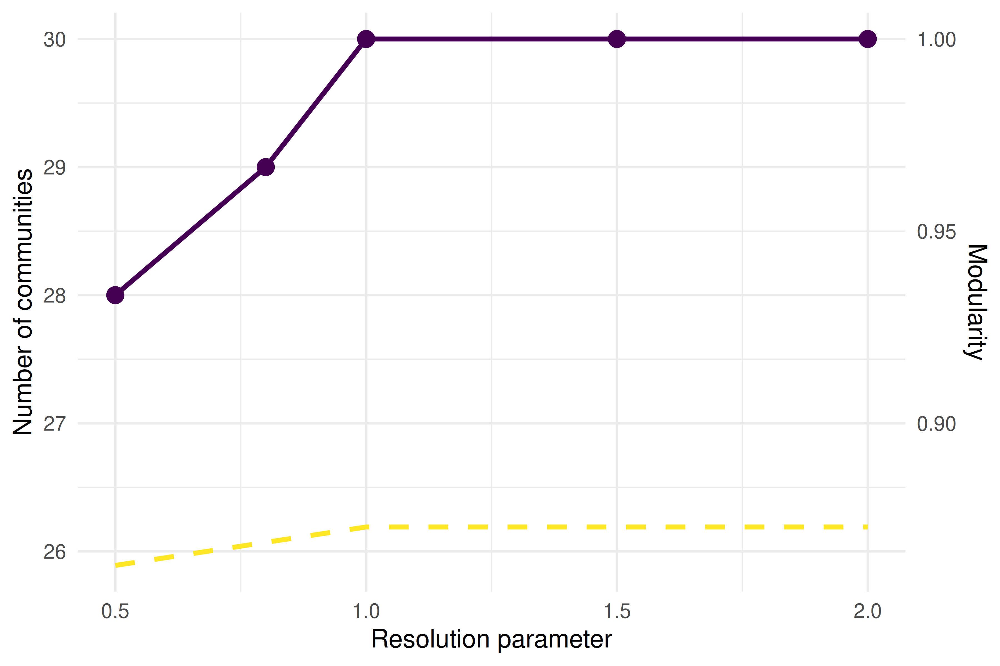
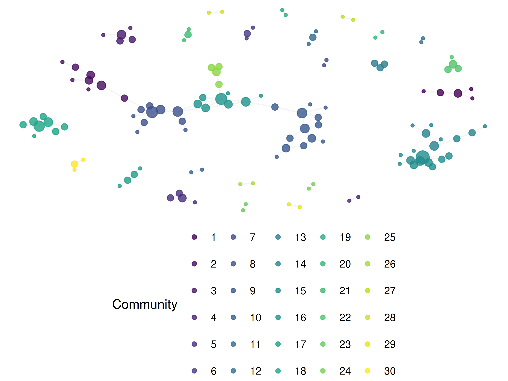

19 Community Detection and Backbone Extraction
19.1 Learning objectives
After completing this chapter, you will be able to:
- Explain why dense networks require backbone extraction before community detection
- Apply the disparity filter to extract statistically significant edges
- Tune the resolution parameter for Louvain and Leiden community detection
- Compare community assignments across methods using Normalised Mutual Information
- Interpret hierarchical community structure at multiple resolutions
19.3 Conceptual background
Bibliometric networks are often dense: in a co-citation or bibliographic coupling network, every pair of documents with any shared citation creates an edge. A corpus of 1,000 papers can easily produce a network with hundreds of thousands of edges, most of which represent weak or coincidental relationships. Applying community detection directly to such networks yields poor results — the algorithms cannot distinguish signal from noise.
Backbone extraction addresses this by pruning edges that are not statistically significant, retaining only the “skeleton” of the network. The disparity filter (Serrano et al. 2009) tests each edge against a null model based on the local weight distribution of its endpoints. An edge is retained if its weight is unexpectedly high given the node’s total weight and degree. This preserves multi-scale structure: both high-weight and low-weight nodes can retain their most important connections.
An alternative is simple threshold filtering (remove edges below a fixed weight), but this systematically removes connections between low-activity nodes, biasing the backbone toward already-prominent actors. The disparity filter avoids this bias by using a local significance test.
Once the backbone is extracted, community detection identifies groups of nodes that are more densely connected internally than externally. The Leiden algorithm (Traag et al. 2019) improves on Louvain (Blondel et al. 2008) by guaranteeing that all detected communities are internally connected. Both algorithms accept a resolution parameter that controls community granularity: lower values produce fewer, larger communities; higher values produce more, smaller communities. There is no single “correct” resolution — the appropriate value depends on the research question.
Fortunato (2010) provides a comprehensive review of community detection methods. In practice, running the algorithm at multiple resolutions and examining the hierarchical structure provides the richest understanding of network organisation.
19.4 Worked example
19.4.1 Building a dense network
We construct a bibliographic coupling network from scientometrics articles.
works <- oa_fetch(
entity = "works",
primary_location.source.id = "S148561398",
from_publication_date = "2020-01-01",
to_publication_date = "2023-12-31",
options = list(sample = 300, seed = 42)
)
refs <- works |>
select(citing_id = id, referenced_works) |>
unnest(referenced_works) |>
rename(cited_id = referenced_works)
bibcoup <- refs |>
inner_join(refs, by = "cited_id", suffix = c("_a", "_b"),
relationship = "many-to-many") |>
filter(citing_id_a < citing_id_b) |>
count(citing_id_a, citing_id_b, name = "shared_refs")
g_full <- graph_from_data_frame(
bibcoup |> select(citing_id_a, citing_id_b, weight = shared_refs),
directed = FALSE
) |>
simplify(edge.attr.comb = list(weight = "sum"))
cat(glue("Full network: {vcount(g_full)} nodes, {ecount(g_full)} edges\n"))#> Full network: 292 nodes, 3680 edges#> Density: 0.086619.4.2 Backbone extraction: disparity filter
disparity_filter <- function(g, alpha = 0.05) {
el <- as_data_frame(g, what = "edges")
node_strength <- strength(g)
keep <- map2_lgl(seq_len(nrow(el)), el$weight, function(i, w) {
from_name <- el$from[i]
to_name <- el$to[i]
k_from <- degree(g, from_name)
k_to <- degree(g, to_name)
s_from <- node_strength[from_name]
s_to <- node_strength[to_name]
p_from <- (1 - w / s_from)^(k_from - 1)
p_to <- (1 - w / s_to)^(k_to - 1)
min(p_from, p_to) < alpha
})
subgraph.edges(g, which(keep), delete.vertices = TRUE)
}
g_backbone <- disparity_filter(g_full, alpha = 0.05)
cat(glue("Backbone: {vcount(g_backbone)} nodes, {ecount(g_backbone)} edges\n"))#> Backbone: 131 nodes, 131 edges#> Edge retention: 4%19.4.3 Threshold filtering for comparison
threshold <- quantile(E(g_full)$weight, 0.75)
g_threshold <- subgraph.edges(
g_full,
which(E(g_full)$weight >= threshold),
delete.vertices = TRUE
)
cat(glue("Threshold (75th pctile = {threshold}): {vcount(g_threshold)} nodes, {ecount(g_threshold)} edges\n"))#> Threshold (75th pctile = 2): 257 nodes, 1035 edges19.4.4 Community detection at multiple resolutions
resolutions <- c(0.5, 0.8, 1.0, 1.5, 2.0)
sweep_results <- map_dfr(resolutions, function(res) {
comm <- cluster_leiden(g_backbone, resolution_parameter = res,
objective_function = "modularity")
tibble(
resolution = res,
n_communities = length(unique(membership(comm))),
modularity = round(modularity(g_backbone, membership(comm)), 3),
max_size = max(table(membership(comm))),
min_size = min(table(membership(comm)))
)
})
sweep_results |> gt()| resolution | n_communities | modularity | max_size | min_size |
|---|---|---|---|---|
| 0.5 | 28 | 0.863 | 19 | 2 |
| 0.8 | 29 | 0.869 | 18 | 2 |
| 1.0 | 30 | 0.873 | 13 | 2 |
| 1.5 | 30 | 0.873 | 13 | 2 |
| 2.0 | 30 | 0.873 | 13 | 2 |
ggplot(sweep_results, aes(x = resolution)) +
geom_line(aes(y = n_communities), colour = palette_sci(2)[1], linewidth = 1) +
geom_point(aes(y = n_communities), colour = palette_sci(2)[1], size = 3) +
geom_line(aes(y = modularity * max(n_communities)),
colour = palette_sci(2)[2], linewidth = 1, linetype = "dashed") +
scale_y_continuous(
name = "Number of communities",
sec.axis = sec_axis(~ . / max(sweep_results$n_communities),
name = "Modularity")
) +
labs(x = "Resolution parameter") +
theme_sci()
Figure 19.1: Number of communities and modularity as a function of resolution parameter.
19.4.5 Comparing backbone vs. full network communities
comm_full <- cluster_leiden(g_full, resolution_parameter = 1.0,
objective_function = "modularity")
comm_backbone <- cluster_leiden(g_backbone, resolution_parameter = 1.0,
objective_function = "modularity")
shared_nodes <- intersect(V(g_full)$name, V(g_backbone)$name)
mem_full <- membership(comm_full)[shared_nodes]
mem_back <- membership(comm_backbone)[shared_nodes]
nmi <- compare(mem_full, mem_back, method = "nmi")
cat(glue("NMI (full vs backbone, shared nodes): {round(nmi, 3)}\n"))#> NMI (full vs backbone, shared nodes): 0.689#> Communities in full network: 10#> Communities in backbone: 3019.4.6 Visualisation
V(g_backbone)$community <- as.factor(membership(comm_backbone))
V(g_backbone)$degree <- degree(g_backbone)
set.seed(42)
layout <- create_layout(as_tbl_graph(g_backbone), layout = "fr")
ggraph(layout) +
geom_edge_link(alpha = 0.1, colour = "grey60") +
geom_node_point(aes(size = degree, colour = community), alpha = 0.8) +
scale_size_continuous(range = c(1, 5), guide = "none") +
scale_colour_manual(values = palette_sci(
n_distinct(V(g_backbone)$community)
)) +
labs(colour = "Community") +
theme_void(base_family = "sans", base_size = 11) +
theme(legend.position = "bottom")
Figure 19.2: Backbone network with Leiden communities (resolution = 1.0).
19.5 Diagnostics and interpretation
- Edge retention rate: The disparity filter typically retains 10–30% of edges. Retention above 50% suggests the network may not be dense enough to require backbone extraction.
- Isolated nodes: Backbone extraction removes nodes that lose all their edges. Report how many nodes are lost and whether they represent a biased subset (e.g., low-cited papers).
- Resolution plateau: If modularity remains stable across a range of resolutions, the community structure is robust. Rapid changes suggest sensitivity to the parameter.
- Singleton communities: Communities with one or two nodes are usually noise. Consider merging them into the nearest larger community or excluding them from interpretation.
19.7 Limitations and responsible use
- The disparity filter has assumptions. It assumes a uniform null distribution of edge weights across a node’s connections. Highly skewed weight distributions may violate this assumption.
- Backbone choice affects conclusions. Different backbone methods (disparity filter, noise-corrected, threshold) retain different edges and can produce different community structures. Report the method and alpha level.
- Resolution is a researcher decision. There is no objectively “correct” resolution parameter. The choice determines the granularity of analysis and should be justified by the research question, not by optimising modularity alone (Fortunato 2010).
- Communities are not ground truth. Detected communities are algorithmic constructs. They reflect structural patterns in citation data, not necessarily real-world research groups or coherent intellectual traditions (Hicks et al. 2015).
19.9 Common pitfalls
- Applying community detection to unfiltered dense networks. The result is usually a single giant community plus isolated fragments. Always extract the backbone first.
- Using a single resolution without justification. The default resolution of 1.0 is arbitrary. Run a sweep and show the sensitivity analysis.
- Comparing modularity across networks of different sizes. Modularity values are not comparable between different networks. Use NMI to compare partitions.
- Interpreting backbone edges as “strong” relationships. The disparity filter retains locally significant edges, not necessarily those with the highest absolute weight. A low-weight edge can be retained if it is important relative to its endpoint’s other connections.
19.10 Exercises
Alpha sensitivity. Run the disparity filter with alpha values of 0.01, 0.05, 0.10, and 0.20. Plot the number of retained edges and communities against alpha. At what alpha does the network become disconnected?
Threshold vs. disparity. Compare threshold-filtered and disparity-filtered communities for the same network. Use NMI to quantify agreement. Which method produces more interpretable communities?
Hierarchical structure. Run Leiden at resolutions 0.5, 1.0, and 2.0. For each pair of resolutions, check whether the finer communities are nested within the coarser ones (a Sankey or alluvial diagram can help visualise this).
Weighted vs. unweighted community detection. Remove edge weights from the backbone and run Leiden again. How much does the community structure change?
19.11 Solutions
Solutions are provided in 2.11.
19.12 Further reading
- Serrano et al. (2009) — The disparity filter for extracting multiscale network backbones.
- Traag et al. (2019) — The Leiden algorithm with resolution parameter tuning.
- Blondel et al. (2008) — The Louvain algorithm for fast community detection.
- Fortunato (2010) — Comprehensive review of community detection, including resolution limits.
- Waltman et al. (2010) — Network construction and clustering for bibliometric applications.
19.13 Session info
#> R version 4.4.1 (2024-06-14)
#> Platform: x86_64-pc-linux-gnu
#> Running under: Ubuntu 24.04.4 LTS
#>
#> Matrix products: default
#> BLAS: /usr/lib/x86_64-linux-gnu/openblas-pthread/libblas.so.3
#> LAPACK: /usr/lib/x86_64-linux-gnu/openblas-pthread/libopenblasp-r0.3.26.so; LAPACK version 3.12.0
#>
#> locale:
#> [1] LC_CTYPE=C.UTF-8 LC_NUMERIC=C LC_TIME=C.UTF-8
#> [4] LC_COLLATE=C.UTF-8 LC_MONETARY=C.UTF-8 LC_MESSAGES=C.UTF-8
#> [7] LC_PAPER=C.UTF-8 LC_NAME=C LC_ADDRESS=C
#> [10] LC_TELEPHONE=C LC_MEASUREMENT=C.UTF-8 LC_IDENTIFICATION=C
#>
#> time zone: UTC
#> tzcode source: system (glibc)
#>
#> attached base packages:
#> [1] stats graphics grDevices utils datasets methods base
#>
#> other attached packages:
#> [1] ggraph_2.2.2 tidygraph_1.3.1 igraph_2.3.1 quanteda_4.4
#> [5] pdftools_3.9.0 arrow_24.0.0 bibliometrix_5.4.0 RefManageR_1.4.0
#> [9] bib2df_1.1.2.0 rcrossref_1.2.1 gt_1.3.0 tidytext_0.4.3
#> [13] glue_1.8.1 openalexR_3.0.1 lubridate_1.9.5 forcats_1.0.1
#> [17] stringr_1.6.0 dplyr_1.2.1 purrr_1.2.2 readr_2.2.0
#> [21] tidyr_1.3.2 tibble_3.3.1 ggplot2_4.0.3 tidyverse_2.0.0
#>
#> loaded via a namespace (and not attached):
#> [1] bibtex_0.5.2 RColorBrewer_1.1-3 rstudioapi_0.18.0
#> [4] jsonlite_2.0.0 magrittr_2.0.5 farver_2.1.2
#> [7] rmarkdown_2.31 fs_2.1.0 vctrs_0.7.3
#> [10] memoise_2.0.1 askpass_1.2.1 base64enc_0.1-6
#> [13] htmltools_0.5.9 contentanalysis_1.0.0 curl_7.1.0
#> [16] janeaustenr_1.0.0 cellranger_1.1.0 sass_0.4.10
#> [19] bslib_0.11.0 htmlwidgets_1.6.4 tokenizers_0.3.0
#> [22] plyr_1.8.9 httr2_1.2.2 plotly_4.12.0
#> [25] cachem_1.1.0 dimensionsR_0.0.3 mime_0.13
#> [28] lifecycle_1.0.5 pkgconfig_2.0.3 Matrix_1.7-0
#> [31] R6_2.6.1 fastmap_1.2.0 shiny_1.13.0
#> [34] digest_0.6.39 shinycssloaders_1.1.0 rprojroot_2.1.1
#> [37] SnowballC_0.7.1 labeling_0.4.3 urltools_1.7.3.1
#> [40] timechange_0.4.0 polyclip_1.10-7 httr_1.4.8
#> [43] compiler_4.4.1 here_1.0.2 bit64_4.8.0
#> [46] withr_3.0.2 S7_0.2.2 backports_1.5.1
#> [49] viridis_0.6.5 ggforce_0.5.0 MASS_7.3-60.2
#> [52] rappdirs_0.3.4 bibliometrixData_0.3.0 tools_4.4.1
#> [55] otel_0.2.0 stopwords_2.3 zip_2.3.3
#> [58] httpuv_1.6.17 rentrez_1.2.4 promises_1.5.0
#> [61] grid_4.4.1 stringdist_0.9.17 generics_0.1.4
#> [64] gtable_0.3.6 tzdb_0.5.0 rscopus_0.9.0
#> [67] ca_0.71.1 data.table_1.18.4 hms_1.1.4
#> [70] xml2_1.5.2 utf8_1.2.6 ggrepel_0.9.8
#> [73] pillar_1.11.1 later_1.4.8 tweenr_2.0.3
#> [76] brand.yml_0.1.0 lattice_0.22-6 bit_4.6.0
#> [79] tidyselect_1.2.1 miniUI_0.1.2 downlit_0.4.5
#> [82] knitr_1.51 gridExtra_2.3 bookdown_0.46
#> [85] crul_1.6.0 xfun_0.57 graphlayouts_1.2.3
#> [88] DT_0.34.0 humaniformat_0.6.0 visNetwork_2.1.4
#> [91] stringi_1.8.7 lazyeval_0.2.3 qpdf_1.4.1
#> [94] yaml_2.3.12 evaluate_1.0.5 codetools_0.2-20
#> [97] httpcode_0.3.0 cli_3.6.6 xtable_1.8-8
#> [100] jquerylib_0.1.4 dichromat_2.0-0.1 Rcpp_1.1.1-1.1
#> [103] readxl_1.4.5 triebeard_0.4.1 XML_3.99-0.23
#> [106] parallel_4.4.1 assertthat_0.2.1 pubmedR_1.0.2
#> [109] viridisLite_0.4.3 scales_1.4.0 openxlsx_4.2.8.1
#> [112] rlang_1.2.0 fastmatch_1.1-8